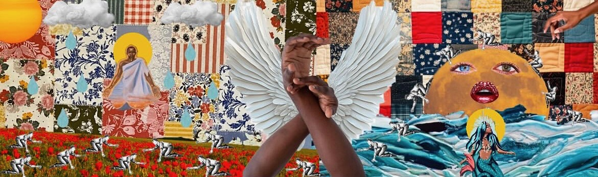

The human form; malleable, resistant, powerful in the most mysterious ways. I sometimes wonder how much emotional turmoil and trauma changes the physical make up of your build. In this project I will explore my own wounds through my body, further deepening my relationship to myself. As someone who tends to shy away from sharing herself, I want to push myself to complete and total transparency, as on the other side of that is the very artist and human I long to be. I want to gain a deeper love and recognition of self. The way the body houses and holds the most eventful and possibly traumatic experiences is miraculous, it’s a warehouse. It's a hub, it’s a repository of the human condition. Those experiences and events lay the foundation for what and who we become; the body keeps the score. The intimacy in the relationship one has to their body is profound, even if seen in a negative light. As a thicker, taller, dark skinned black woman in this country, my relationship to beauty recognition has been at times a daunting task. Being bigger in shape has always been a point of contention for me, searching the recesses of my mind, I struggle to find moments of contentment in regards to my body, to my shape, to this temple that houses the most powerful light. I believe to some extent or another every living being has or continues to struggle with loving, accepting, and cherishing their bodies. In this project, I will be exploring the overlapping and intersection of emotional trauma, where it’s stored, and how it changes, shifts and morphs the body. In this project I will be exploring my own relationship to my body. Through this, I hope to gain a greater love, appreciation, and understanding of myself, and of what my body has gone through. It has been quite difficult for me to formulate the words for this concept, as my brain moves quicker than my mouth, and by the time I pen one idea, I have just as easily zipped off to the next. I have an incessant need to learn to do everything myself which led me to collage. I have always been a big fan of the chopping and the pasting and the oversizing, and the replacing of it all. The idea of taking an image and creating a whole other world from it has always interested me greatly,using varying images to tell a truth you possibly can’t with just words. Where do those words live in your body? How does it affect the way you walk through the world physically? Where do you carry that past trauma? What images can express that best? I will be using varying images to serve the dual purpose of recreating as well as redefining my relationship to my body and myself. I cannot lie, I at times have found it difficult to look at myself naked, so honest, so vulnerable. I want to reclaim my vision and my version of myself, by working through my demons in relation to my body. Using collage to display the more abstract moments or bits of what I feel. Using those images to show my audience my journey of what images of self I place on my existence, and what images of self under love and compassion look and feel like. It's the undressing of myself, to the world. I see butterfly wings, and flowers, I see tentacles and an ocean, I see layers and layers and layers, that I want to take the world on a journey of unearthing with me to reach my core. I don’t know what my core is, but I'm excited to invite the audience on that journey with me. I can’t say I have a specific target audience, possibly women of color in their late to early 30’s. The idea of facing what and who you thought you would be by a certain time, unmasking those fears, and realizing you have more time. But that beautiful journey of self exploration need not be limited to a gender, age, or race. Simply, those who invite exploration and want to connect deeply with themselves and others, those are who this project will be for. I do believe this project should be site specific, as I haven't fully fleshed that out yet, I want to fully be daring. I want to be comfortable in open spaces. Reclaiming my body in this world means having an ability to take up space in it.
Niara Seña is a producer and editor from the Lower East Side of New York City. After receiving her BFA in acting from SUNY Purchase in 2016, she went on to create her own work. She is as well a writer director and producer with her own production company. SunflowerSol Productions is a company that aids in assisting artists of color create projects in a safe and brave space. In addition to working as a prodcution asistant at Likeable media and the USTA, She has worked on various projects including an off broadway production of the musical Very Merry, produced a festival of one act plays at Brooklyn Art House, and produced various short films. she is captivated by the arts, and through her journey has discovered that having an artistic outlet created a pathway to express her thoughts, creativity, and imagination. Art is the encouragement to continue to grow as a human and she can't wait to connect with you!
